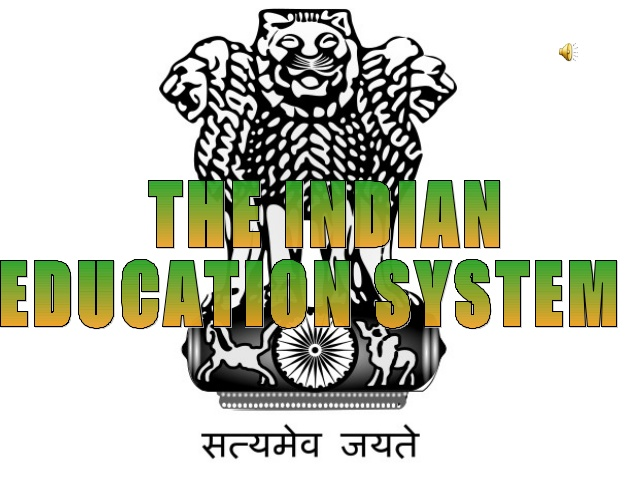

Indian Education Board
Education in India is primarily provided by public schools (controlled and funded by the government at three levels: central, state and local) and private schools.
Under various articles of the Indian Constitution, free and compulsory education is provided as a fundamental right to children aged 6 to 14. The approximate ratio
of public schools to private schools in India is 7:5.
India has made progress in increasing the attainment rate of primary education. In 2011, Approximately 75% of the population, aged between 7 and 10 years, was literate.
India's improved education system is often cited as one of the main contributors to its economic development.Much of the progress, especially in higher education and
scientific research, has been credited to various public institutions. While enrollment in higher education has increased steadily over the past decade, reaching a
gross enrollment ratio of 24% in 2013, there still remains a significant distance to catch up with tertiary education enrolment levels of developed nations, a
challenge that will be necessary to overcome in order to continue to reap a demographic dividend from India's comparatively young population.
At the primary and secondary level, India has a large private school system complementing the government run schools, with 29% of students receiving private education in the
6 to 14 age group.[9] Certain post-secondary technical schools are also private. The private education market in India had a revenue of US$450 million in 2008, but is
projected to be a US$40 billion market.
In January 2019, India had over 900 universities and 40,000 colleges.[16] In India's higher education system, a significant number of seats are reserved under affirmative action
policies for the historically disadvantaged Scheduled Castes and Scheduled Tribes and Other Backward Classes. In universities, colleges, and similar
institutions affiliated to the federal government, there is a maximum 50% of reservations applicable to these disadvantaged groups, at the state level it can vary. Maharashtra had
73% reservation in 2014, which is the highest percentage of reservations in India.
CBSE